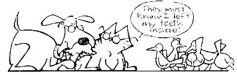

Back in No. 52, THE Mother Earth News"' published an article by Kansas veterinarian Randy Kidd on how to restrain a farm animal. Little did we (or Randy) know that the one piece would lead to many more . . . yet very few issues of MOTHER since then haven't carried a feature by Dr. Kidd on some facet of livestock care.
Well, "MOM's medicine man" has now decided to share some of his "vet's-eye view" on pets, the very special creatures that we humans for centuries-have welcomed into our homes and hearts. We hope that our readers will find Dr. Kidd's columns on this subject to be as informative and enlightening as have been his commonsense articles on livestock.
For me, watching the process of aging is every bit as fascinating as observing the miracle of birth. The changes that occur-graying hair, a slower gait, and perhaps somewhat diminished eyesight and/ or hearing remind us that life's processes inevitably and quite naturally slow down in all of the earth's creatures.
The only major difference, in fact, between the ways pets and people age is that-because an animal's life span is typically much shorter than that of a human-it often appears that our creature companions age very rapidly . . . sometimes seemingly overnight. There's nothing, of course, you can do to completely halt this process (and I, for one, wouldn't want to), but there are a few steps you can take to make growing old a pleasant and comfortable period for your canine or feline buddy.
Obviously, the question of when, exactly, your four-legged friend should be considered "old" has no precise answer. Every body whether it be animal or human-is unique, with its own inherent abilities, needs, and timetables for maturing and aging. Each critter, in other words, grows old at its own pace. (In a very general sense, however, a pooch is usually regarded as "past its prime" at age seven or eight, and a cat although likely to age a mite slower-is no young at that stage, either.)
In any case, maintaining a healthful lifestyle-including a reasonable diet and regular exercise-is the real key to your pet's longevity (and to yours, too, for that matter). An elderly animal may not have the stamina it enjoyed in its younger days, but that doesn't mean you should allow it to become a lethargic layabout. Walking your dog once a day is an absolute must . . . and a good leg-stretching jog several times a week will be beneficial for both of you. As the years go by, you may need to shorten those runs, or take them a bit more slowly . . . and perhaps an aging canine won't be up to particularly long sessions of fetch-the-stick anymore. Moderating such activities is fine, but don't discontinue them altogether (unless, of course, your vet recommends otherwise) . . . since exercise keeps the muscles supple, the arteries open, the joints fluid, and the mind agile.
If you own a cat, of course, you know that a lap around the block is the farthest thing from a feline's mind! The most exercise the average cat wants is a slow amble to its favorite snoozing spot, and there's not much you can do to change this natural tendency toward a life of leisure. But you can build a sleeping perch in a location inaccessible enough that old pussy will have to stretch some to get to it, and you can make sure that the animal doesn't eat itself into a butterball physique (remember . . . you're in charge of your pet's diet, regardless of how much it whines and complains for more munchies).
Controlling your pet's calorie intake, in fact, becomes more and more important as the animal gets older, because (as we humans inevitably discover) the body needs fewer and fewer calories as it ages. An "oldster" tends to put on fat more easily, even when it's exercising regularly . . . and the only way to maintain a steady weight is to gradually cut back the calories-while, of course, still providing adequate nutrition-as the years go by.
TWO PROBLEM AREAS
Even when you've done all you can to see that Fido or Sylvester is lean and fit, you'll have to take some extra measures during your pet's golden years to avoid problems in two specific areas that seem to plague many older animals: kidneys and teeth.
For some reason, a critter's kidneys are frequently the first organs to show signs of aging. Older dogs and cats simply don't manufacture urine as well as do youngsters . . . and, as most folks know, many of the body's waste products are eliminated via the urine.
One of the primary jobs of the kidneys, in fact, is to filter out protein wastes. Logically enough, then, one way to help out your aging pet is to feed it a diet containing high-quality protein (eggs, dairy products, and organ and other lean meats are good sources) in reduced amounts. Remember, too, that even poorly working organs can handle a moderate quantity of protein wastes . . . it's the occasional overload that causes problems. And since hard, fast exertion breaks down proteins very rapidly (thus generating a rush of wastes), your pet should receive frequent, moderate exercise rather than once-a-week marathons. Likewise, it's best to spread your critter's daily food intake out, too . . . several proportionately small meals are preferable to one big dinnertime feast.
There's also another simple tool you can use to help your pet cope with the declining ability of its kidneys: water. The more trips it makes to the tree trunk or litter box, the more wastes will be eliminated . . . so encourage your aging animal to increase its consumption of that precious fluid. Always make sure that plenty of clean, fresh water is readily available . . . and if your pet (like many) doesn't particularly care for the liquid, put just a pinch of thirst building salt in its food to promote a walk to the old drinking hole.
When it comes to caring for your critter's teeth, the cardinal rule to follow is simply to keep them clean. When food particles are allowed to accumulate on the surface of an animal's teeth, they foster bacterial growth and the eventual formation of a rock-hard, crusty mass called dental plaque (yes, the same substance that claims thousands of human teeth each year). As the formation gets larger, it pushes at the victim's gums and causes an infection called gingivitis, which in turn can lead to loose teeth and any number of root and gum diseases.
Feeding your pet dry, crunchy food regularly will minimize plaque buildup . . . and some folks go a step further and brush their dog's or cat's teeth-using a child's soft toothbrush-twice a week. Unless you've routinely practiced these precautions, however, your aged four-legged friend will probably already have more plaque than can be handled with a brush . . . in which case you'll need to remove it with a dentist's tooth scaler (and in some cases your pet's teeth may require a professional cleaning). Ask your veterinarian to show you how to use this instrument to scrape away small tartar accumulations as they form.
LIKE A FINE WINE. . .
To my mind, aging is just another part of the excitement of living fully. (And considering the fact that my hair gets grayer every day, I'm glad I feel that way!) Your pet's physical functions will slow down gradually as the years go by, but that doesn't mean it can't continue to enjoy a robust life. just keep that buddy of yours on a steady diet of exercise and sound nutrition-remembering to take extra precautions to care for its kidneys and teeth-and you'll both be likely to discover that "old age" can be an especially, pleasant, rewarding time.
|
 |
|
|